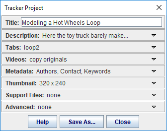

A Tracker project consists of the following resources zipped together in a single file with extension .trz.
Like a traditional Tracker tab file (.trk), a Tracker project file can be opened in Tracker just by double-clicking it.
Since they are self-contained and self-documenting, Tracker project files are the best way to save and share your Tracker projects. With searchable keywords and other metadata, you can browse and find projects easily with the Library Browser.
The figure below shows a typical Tracker project open in the Library Browser. The left pane shows a tree node with the icon and title of the project, and the right pane displays an html page with information about the project. The searchable metadata is displayed in a tooltip when the mouse hovers over a tree node as shown.
Click the Save Project button  on the toolbar or choose the File|Save Project As... menu item to open a Tracker Project window with eight control panes for defining the project properties. The control panes toggle open and closed with a mouse click and display a property summary when closed.
on the toolbar or choose the File|Save Project As... menu item to open a Tracker Project window with eight control panes for defining the project properties. The control panes toggle open and closed with a mouse click and display a property summary when closed.
When your project is ready click the Save As... button to save it as a Tracker project file (.trz). The tabs, videos and optional support files are zipped together along with automatically generated thumbnail image and html information files.

The control panes open to display additional fields and controls.
1. Title. Enter a title for the project. It should be short but informative. (Note this is NOT a file name--you will choose that when you save the project.) Shown in both the information page and the tree in the Library Browser. Included in searches. (Default: name of the current tab)
2. Description. Enter a brief description of the project. Shown in the information page. To include detailed instructions or reports see Support Files. (Default: none)

3. Tabs. Select the tabs you wish to include in the project and enter new names for the tabs if desired. The current tab is always selected. (Default: current tab only, name unchanged)
4. Videos. Check the Save Clips As checkbox to trim videos to their current video clip or uncheck to include the full original videos in your project. Saving clips can reduce the file size significantly in many cases. If saving clips, choose a format for the trimmed video from the format dropdown. The JPEG format (image sequence) has the advantage that it can be opened by Tracker even without a video engine, but can result in larger file sizes. (Default: copy originals)
5. Metadata. Enter the project author(s), contact information (e.g. institution, email, etc.) and keywords or phrases. Authors and contact are shown in the information page and all are shown in the tooltip when the mouse hovers over a tree node. All are included in searches. It is common, but not required, to separate key phrases with commas. (Default: none)
6. Thumbnail. Check Preview to display the thumbnail image to be shown in the information page. Click Settings to open a separate dialog that enables you to control the source, size and format of the thumbnail image. (Default: 320 x 240)


7. Support Files. Support files are typically project instructions or reports that open automatically whenever the Tracker project is opened. Click Add to add a support file to your project. You can add as many as you wish but having too many can be confusing when opening the project. To remove a file, select it in the list and click Remove. Most support files are PDF documents or HTML pages but you may also add DOC, TXT and other file types. Images required by HTML support files are automatically included. Note it is NOT necessary to add HTML pages displayed in a Tracker page view--these are included automatically in the project.
8. Advanced: Enter the URL of a web page into the Link field to include a hyperlink to it in the information page. To replace the automatically generated information page entirely, click the Open icon and select an external html file to take its place. The title and metadata you have defined will be added to the html code when copying the file so the Library Browser will still be able to find your project when searching.
Since Tracker project files (.trz) are fully self-contained you can email them directly to teachers, colleagues or friends. To share with peers in a classroom simply copy them to a shared local directory. Any Tracker user with access to your project file can open it with just a double-click.
Sharing on the web makes your Tracker projects available to Tracker users worldwide. There are two ways to do this:
To open a web collection in the library browser you need its URL path (e.g. "http://www.my_institution.edu/my_shared_projects/library_collection.php" or "http://www.my_institution.edu/my_shared_projects/my_collection.xml"). Then do one of the following: